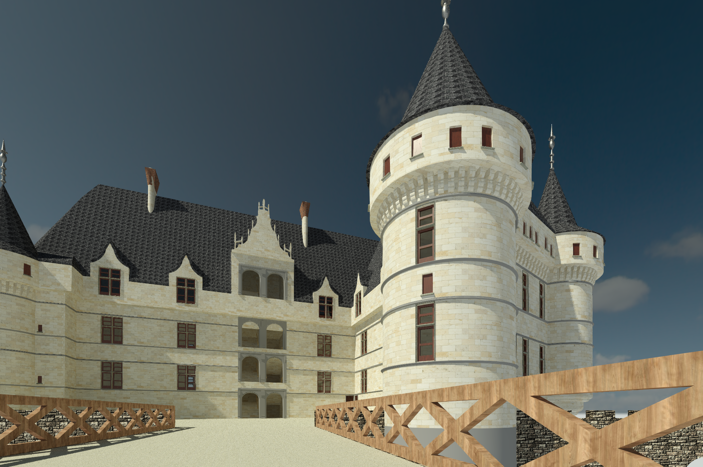
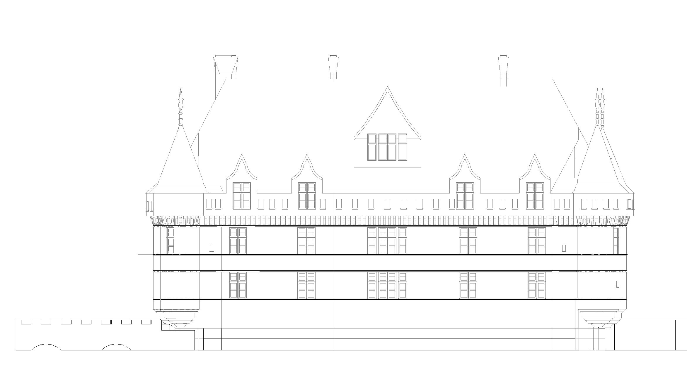
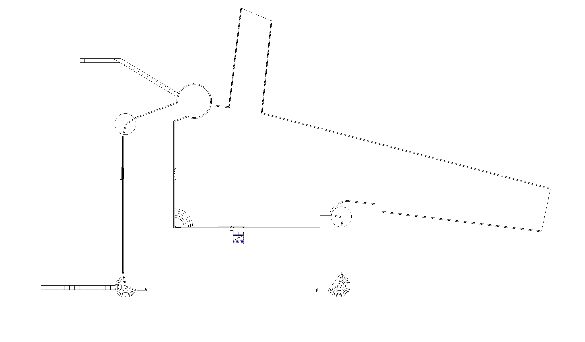
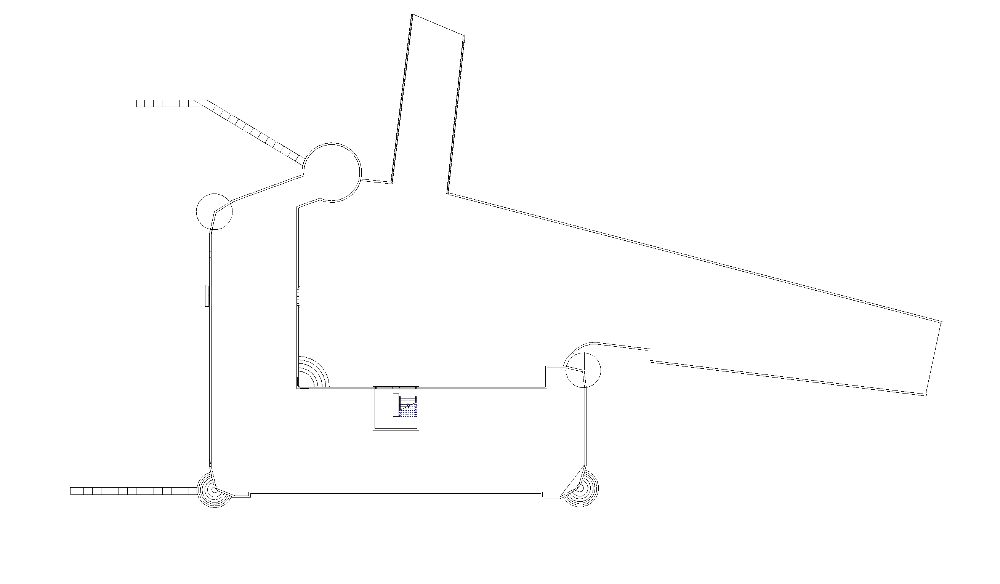
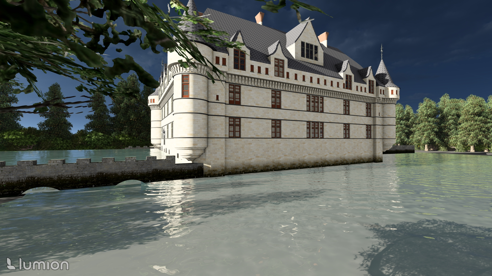
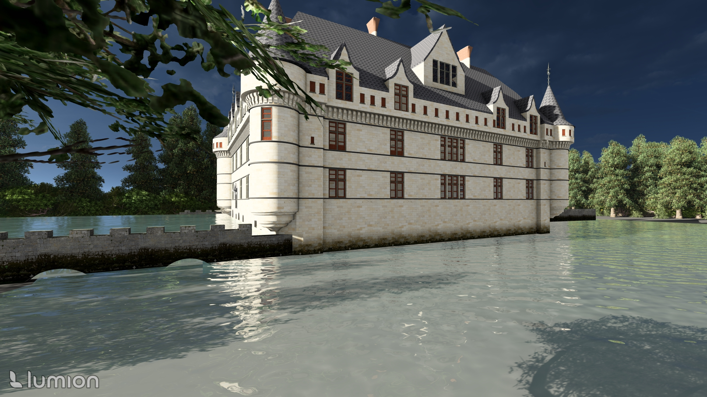

Présentation du Château
Le château d’Azay-le-Rideau, édifié au XVIᵉ siècle au cœur de la vallée de la Loire, est un chef-d’œuvre de l’architecture Renaissance française. Construit sur une île au milieu de l’Indre, il se distingue par ses façades élégantes, ses tourelles finement sculptées et son miroir d’eau qui reflète harmonieusement l’édifice.
Pourquoi ce projet ?
Nous avons décidé de travailler sur le château d'Azay-le-Rideau car nous cherchions un bâtiment historique emblématique à modéliser. La réalisation de la modélisation de ce château représente un challenge riche, technique et fascinant, offrant à la fois un patrimoine exceptionnel et une architecture complexe.
Les données d'entrées
Pour ce projet nous avons utiliser le LIDAR HD de l'IGN qui est un nuage de point d'ampleur national. Ce nuage de point est malheuresement assez peu dense, nous nous sommes par conséquent aussi appuyé sur des images et illustrations tiré d'internet.

Les livrables
Les livrables attendus sont un fichier RVT, un fichier IFC, des images de rendu, que vous pouvez retrouver dans la section suivante enfin la note technique est synthétisé dans les différentes sections de cette page web.
Lien vers l'IFC : Maquette IFC
Lien vers le Revit : Maquette Revit
Lien vers les images : Images de rendu
Les Images
 {kind=link}
{kind=link}
 

{kind=link}
 

{kind=link}
Compte rendu technique
La méthodologie utilisée pour réaliser le projet s’est appuyée sur une maquette centrale dans Revit, permettant à trois personnes de travailler simultanément sur des fichiers locaux synchronisés.
Le géoréférencement a été effectué à partir d’un plan cadastral en Lambert 93, garantissant une cohérence spatiale. Seules les façades du château ont été modélisées afin de respecter le périmètre défini. Enfin, un export IFC a été réalisé en utilisant les paramètres de base des familles IFC, avec une structuration en IFCSite, IFCBuilding et IFCBuildingStorey.